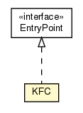

hu.sch.kfc.client
Class KFC

java.lang.Object
 hu.sch.kfc.client.KFC
hu.sch.kfc.client.KFC
- All Implemented Interfaces:
- com.google.gwt.core.client.EntryPoint
public class KFC
- extends Object
- implements com.google.gwt.core.client.EntryPoint
Az egész KFC alkalmazás belépőpontja, innen indul az egész finomság. Nem történik nagy varázslat,
kérünk a GIN-től egy Application-t, ami létrehozza a workflowhoz szükséges
vezérlőelemeket (ActivityManager, PlaceHistoryHandler) illetve az alkalmazás keretét jelentő
Shell widgetet.
A workflowt már az ActivityManager vezérli, aki a MainActivityMapper
segítségével az adott Place-ekhez, elindítja a megfelelő Activity-t, aki kezeli a
saját kis View-ját.
Minden AbstractActivity-ben elérhető a PlaceController, ezzel tudunk más helyekre
navigálni, ezzel egy másik Activity-t elindítani.
- Author:
- messo
|
Constructor Summary |
KFC()
|
| Methods inherited from class java.lang.Object |
clone, equals, finalize, getClass, hashCode, notify, notifyAll, toString, wait, wait, wait |
KFC
public KFC()
onModuleLoad
public void onModuleLoad()
- Belépési pont
- Specified by:
onModuleLoad in interface com.google.gwt.core.client.EntryPoint
Copyright © 2011. All Rights Reserved.